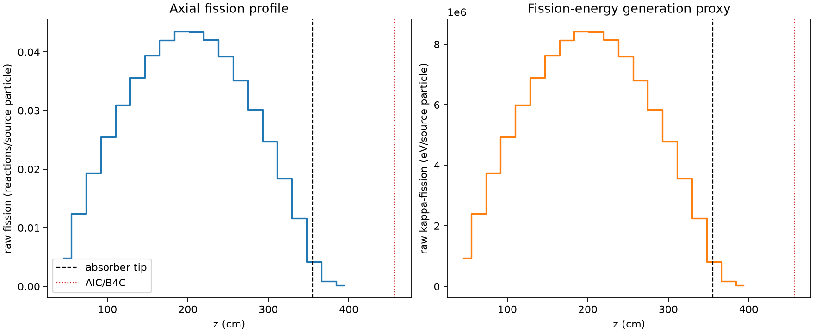
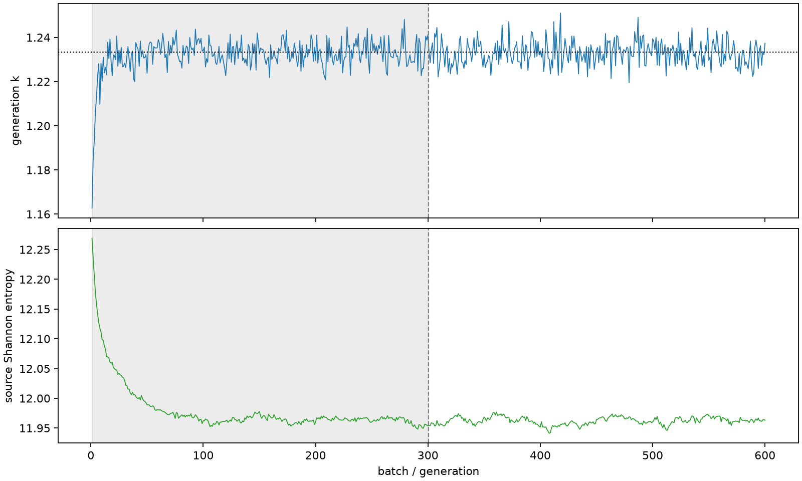

| field | value |
|---|---|
| experiment | V2-STAGE_256_OGRENCI_01-0008 |
| k | 1.2332876860767035 |
| MC standard error | 0.0001895275776839433 |
| seconds | 954.0745574529865 |
| acceptance | not_assessed |
| convergence | review_required |
Completed is output integrity only; physical and statistical review required. Zero tallies do not prove zero production or zero uncertainty.
| diagnostic | value |
|---|---|
| geometric fuel voxels | 5280 |
| zero fission tally voxels | 0 |
| low signal fuel voxels | 0 |
| low signal fission share | 0.0 |
| low signal kappa share | 0.0 |
| important fission share | 0.9500234699589889 |
| previous filter included | 5280 |
| duration estimate s | 1562.5173488400023 |
| actual minus estimate s | -608.4427913870159 |
| fission relative MC error | statistics |
|---|---|
| all_geometric_fuel | {"voxels": 5280, "positive_mean_voxels": 5280, "zero_mean_voxels": 0, "undefined_relative_error_voxels": 0, "median": 0.010987232805508996, "p95": 0.0691870470648104, "maximum": 0.1780897001880166} |
| low_signal | {"voxels": 0, "positive_mean_voxels": 0, "zero_mean_voxels": 0, "undefined_relative_error_voxels": 0, "median": null, "p95": null, "maximum": null} |
| important_95pct | {"voxels": 3884, "positive_mean_voxels": 3884, "zero_mean_voxels": 0, "undefined_relative_error_voxels": 0, "median": 0.009845586272937547, "p95": 0.014913267759613623, "maximum": 0.017910142463025178} |
| outside_previous_filter | {"voxels": 0, "positive_mean_voxels": 0, "zero_mean_voxels": 0, "undefined_relative_error_voxels": 0, "median": null, "p95": null, "maximum": null} |
| kappa_fission relative MC error | statistics |
|---|---|
| all_geometric_fuel | {"voxels": 5280, "positive_mean_voxels": 5280, "zero_mean_voxels": 0, "undefined_relative_error_voxels": 0, "median": 0.010975708439209734, "p95": 0.06909664213824944, "maximum": 0.1778415077028094} |
| low_signal | {"voxels": 0, "positive_mean_voxels": 0, "zero_mean_voxels": 0, "undefined_relative_error_voxels": 0, "median": null, "p95": null, "maximum": null} |
| important_95pct | {"voxels": 3884, "positive_mean_voxels": 3884, "zero_mean_voxels": 0, "undefined_relative_error_voxels": 0, "median": 0.009835289072498737, "p95": 0.014896492894210198, "maximum": 0.017890167421600135} |
| outside_previous_filter | {"voxels": 0, "positive_mean_voxels": 0, "zero_mean_voxels": 0, "undefined_relative_error_voxels": 0, "median": null, "p95": null, "maximum": null} |
| axial bin | fission share | kappa-fission share |
|---|---|---|
| 1 | 0.009666458583178663 | 0.009666838892956525 |
| 2 | 0.02469156258498334 | 0.0246913898236348 |
| 3 | 0.038377148577944956 | 0.038377044097359765 |
| 4 | 0.05068083954812826 | 0.050680783532443076 |
| 5 | 0.06149017048255522 | 0.06149007529138532 |
| 6 | 0.07066182567806369 | 0.0706617725493385 |
| 7 | 0.07829563192654031 | 0.0782955482527171 |
| 8 | 0.08347607177578763 | 0.08347565986534515 |
| 9 | 0.08631381010298556 | 0.0863134959019101 |
| 10 | 0.08621315969945657 | 0.08621293914657413 |
| 11 | 0.08352284740806051 | 0.08352262465465776 |
| 12 | 0.07785296410169001 | 0.07785300450044699 |
| 13 | 0.06970791214069155 | 0.0697078601882262 |
| 14 | 0.05991627138159615 | 0.05991621268392018 |
| 15 | 0.0490274091789944 | 0.049027160131564156 |
| 16 | 0.036588405253758324 | 0.036588450575121494 |
| 17 | 0.023122101515304933 | 0.02312208357376719 |
| 18 | 0.008291275083384586 | 0.008292268325255536 |
| 19 | 0.0017449250322417913 | 0.001745440351550063 |
| 20 | 0.00035920994465358906 | 0.00035934766182630094 |
Histories include the inactive-to-active transition at batch 300. kappa-fission approximates fission energy production, not total heat deposition.

